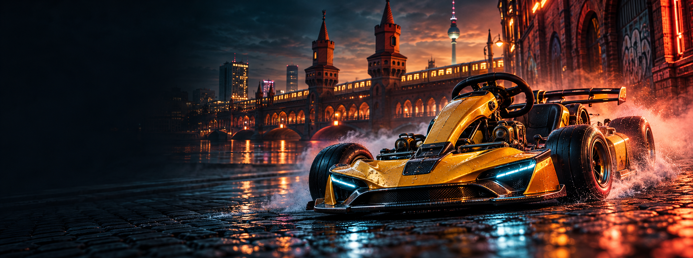

Asset Kit V6 · 12 Maps · 24 transparente PNG-Icons
Die Bühne für deinen Kiez.
Modelle, Icons, Werbeillustration und Inhalte für die eigenständige 3D-Landingpage. Diese Galerie dient zur Asset-Prüfung.
Atmosphäre für den Einstieg

Generierte Werbeillustration. Kein Screenshot des laufenden Spiels.